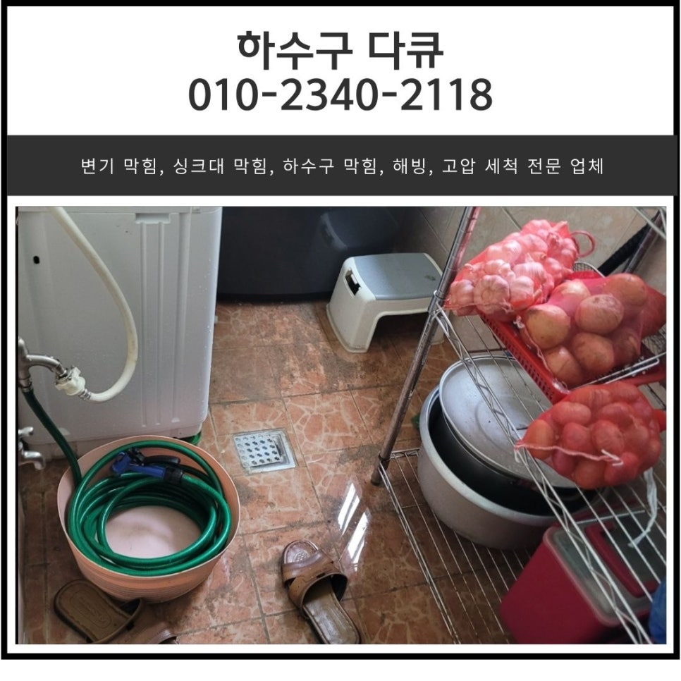
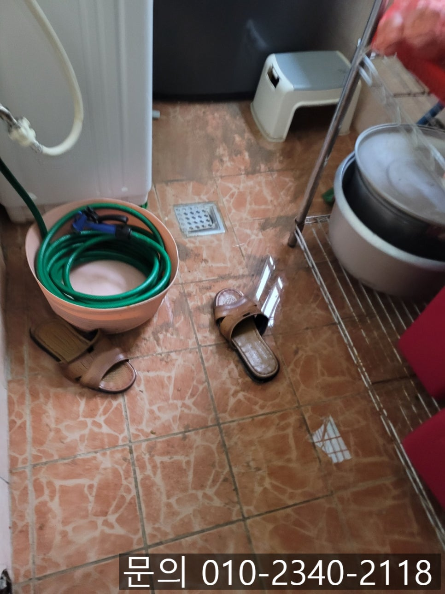
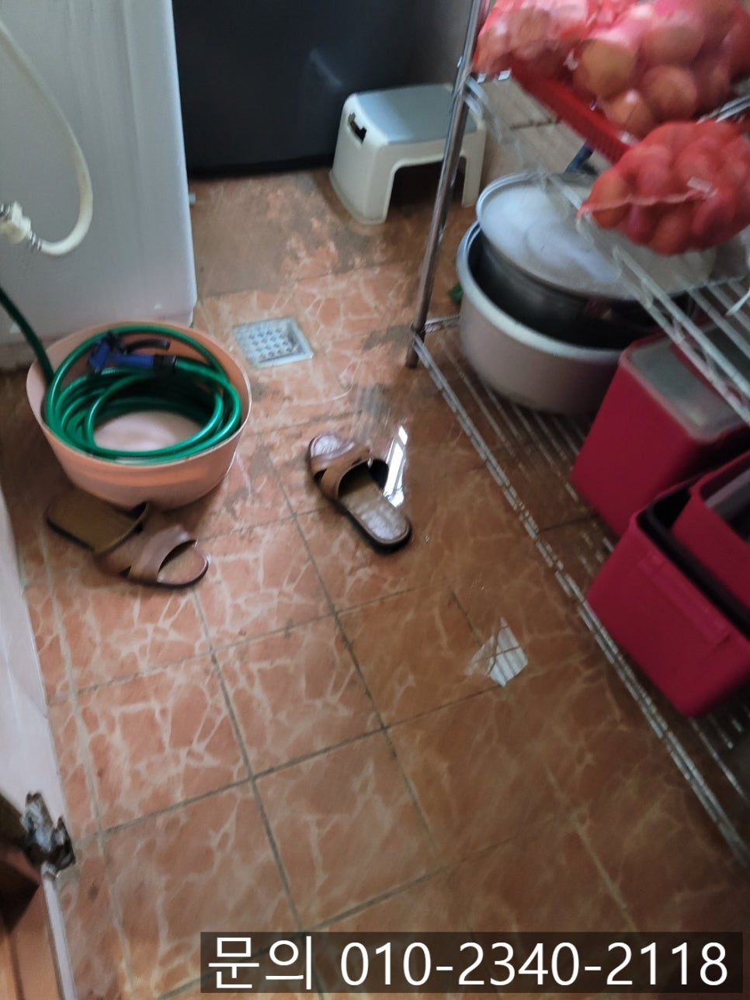
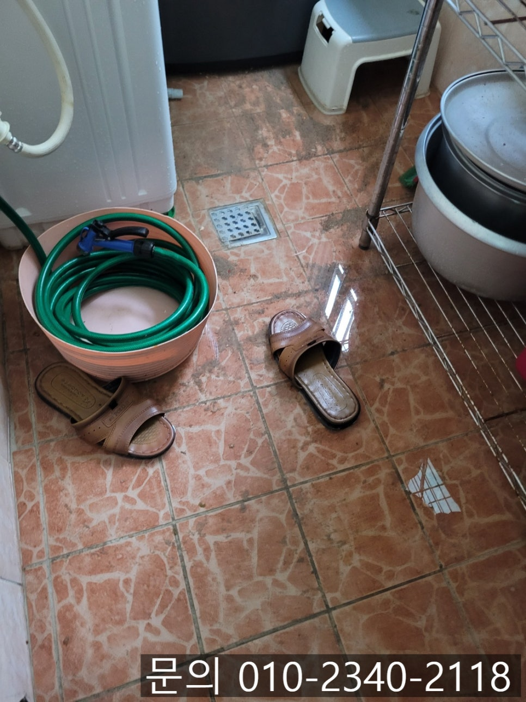
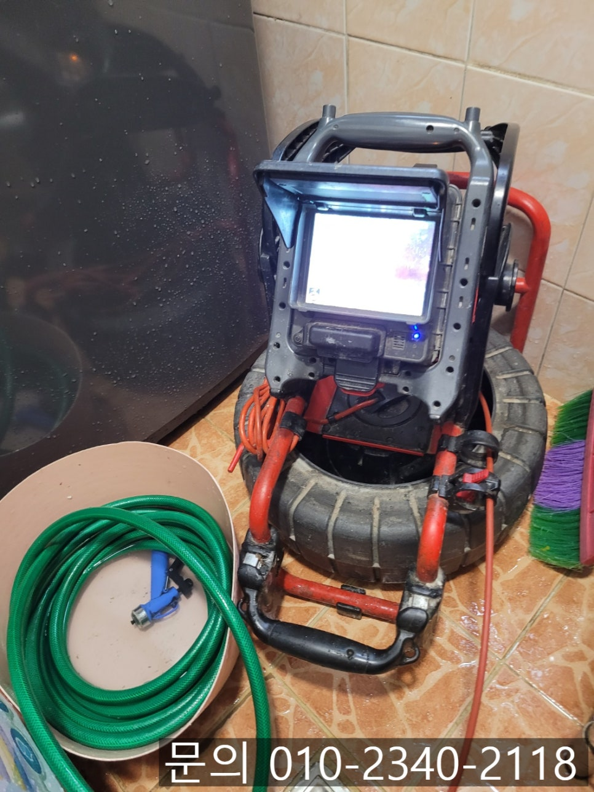
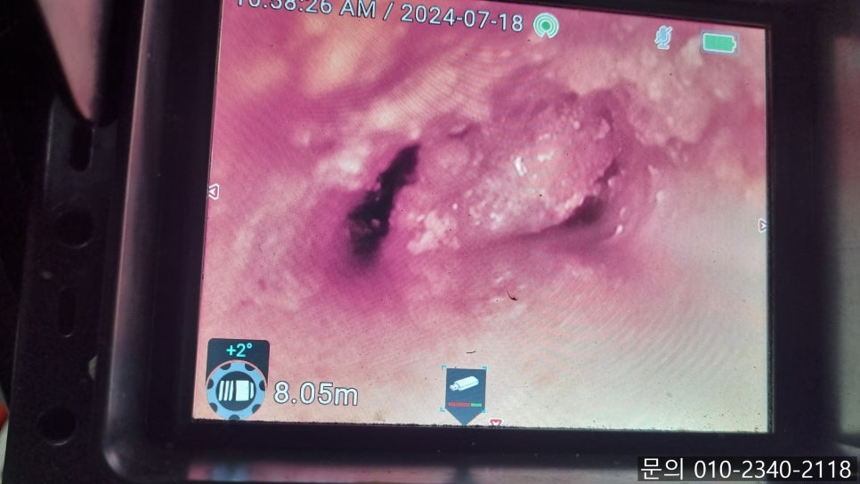
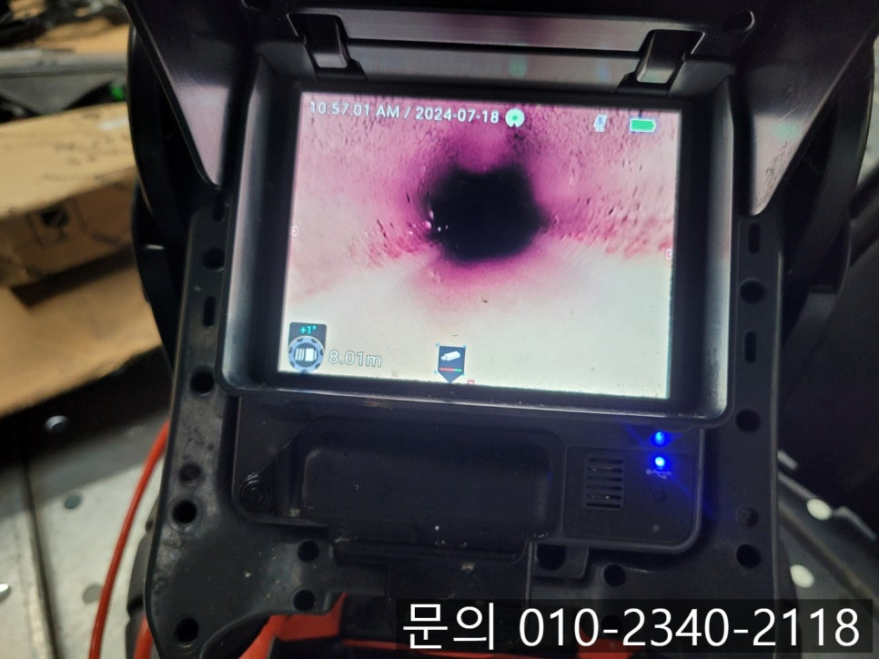

🏠 매탄동 하수구 막힘 수원 영통구 태장동 욕실 세탁실 역류 해결하는 방법
수원 매탄동 하수구막힘 전문 시공 후기

📋 작업 개요
- 위치: 수원 매탄동, 매탄동, 수원
- 서비스 유형: 하수구막힘, 배관막힘, 역류해결, 뚫는업체, 배관청소
- 작업 일시: 2025. 6. 5. 19:33
- 업체명: 하수구수사대 (010-5615-2118)
🔍 문제 상황
안녕하세요.
매탄동 하수구 막힘, 수원 영통구 태장동 욕실, 세탁실 역류 해결하는 방법을 소개해 드릴 하수구 다큐입니다.
오늘의 작업은 수원 영통구 매탄동에 거주하고 계신 고객님께서 매탄동 하수구 막힘이 발생해 세탁실 배수구에서 역류가 일어난다고 말씀해 주셔서 작업을 다녀왔습니다.
고객님과 통화하는 과정에서 전달받은 내용으로는 세탁실 배수구의 문제가 상당히 심각하게 느껴져 신속하게 현장으로 달려갔어요.
세탁실 배관이 막히는 이유는 다양한데요.
과도한 세제 사용이나 세제가 완전히 녹지 않아 배관 내부에 쌓이게 되고, 빨래를 하면서 나오는 먼지나 섬유 찌꺼기 등이 쌓이면서 막힘이 발생하게 됩니다.

🔎 원인 분석
💡 전문가 진단: 정밀 진단 장비를 사용하여 슬러지의 고착 여부를 판명하고 타격/세척 작업을 실시했습니다.
간혹 실수로 빠트린 단추나 동전 등이 배관을 막는 경우도 있고, 배관의 기울기 문제로 인해 사용한 물이 흐르지 못해 잔류물이 쌓여 막힘이 발생하기도 하는데요.
오늘은 수원 영통구 태장동 욕실 세탁실 역류 현장을 소개해 드리면서 세탁실 바닥 막힘의 원인과 해결하는 방법을 소개해 드릴게요.
수원 영통구 태장동 욕실, 세탁실 역류 현장으로 신속하게 방문해 보니, 세탁실의 경우 역류된 물이 내려가지 못하고 있는 상태였어요.
석션으로 빨아들여 제거한 다음 내시경으로 점검해 보기로 했습니다.
역류한 물을 모두 제거해 준 다음 내시경 카메라를 사용해 배관의 내부를 확인해 보니 각종 먼지, 머리카락 등이 뒤엉켜 배관 내부를 막고 있는 상황이었습니다.
먼지와 머리카락이 쌓여서 만들어진 이물질이 왜 저렇게 생긴 거지? 하고 궁금하신 분들이 계실 텐데요.
각종 이물질과 세제에 남아 있는 기름 성분이 슬러지 현태로 굳어 버리면서 만들어지게 됩니다.

🔧 작업 과정
기름 슬러지가 배관을 막고 있다 보니 세탁기에서 나온 물이 흘러가지 못하고 거꾸로 역류하게 되는데요.
내시경 카메라로 이물질을 확인하면서 플렉스 샤프트 장비를 이용해 배관 청소를 진행하게 되면 해결되기 때문에 걱정하지 않으셔도 됩니다.
플렉스 샤프트 장비를 이용해 여러 차례 반복해서 배관 청소 작업을 진행하자 기름 슬러지가 모두 제거되고 깨끗해진 내부를 확인할 수 있었습니다.
세탁실 배관 청소를 마치고 화장실 바닥도 점검해달라는 요청을 받아 내시경 카메라로 점검을 해보니, 화장실 바닥 역시 머리카락과 먼지 등으로 인해 배관이 막혀있는 상태였어요.
아직 역류할 정도로 심한 상태는 아니었지만 이대로 방치하게 되면 곧 역류하게 될 수 있다 보니 고객님께서 이물질을 제거해달라고 하셨습니다.
세탁실 바닥과 마찬가지로 내시경 카메라로 이물질의 위치를 파악하면서 플렉스 샤프트로 기름 슬러지를 제거하는 작업을 진행해 드렸어요.
세탁실과는 다르게 석회도 쌓여 있는 상태이다 보니 쉽지 않았는데요.
플렉스 샤프트 장비의 노즐 끝에 달린 체인이 배관 내부에서 회전하면서 이물질을 타격해 조금씩 제거해나가기 시작합니다.
수차례 반복해서 작업을 진행하자 석회와 기름 슬러지들이 모두 제거되고 깨끗해진 배관 내부를 확인할 수 있었어요.
하수구 막힘의 원인이 다양한 만큼 정확한 원인을 찾아 해결하는게 중요합니다.


✅ 작업 완료
하수구 다큐는 다양한 현장 경험을 바탕으로 어떤 하수구도 시원하게 뚫어드리고 있어요.
지금 하수구 막힘으로 고민하고 계신다면 연락주세요.
경기도 수원시 영통구 봉영로 1612 7층 710-A19호




⚠️ 하수구 배관 막힘 예방 및 관리 가이드
- ✅ 머리카락, 비닐, 물티슈 등 물에 분해되지 않는 이물질은 하수구 유입을 절대 금지해 주세요.
- ✅ 하수구 거름망을 씌우고 모여진 이물질은 주기적으로 쓰레기통에 바로 비워주셔야 합니다.
- ✅ 배관 노후가 심할 경우 이물질이 더 쉽게 걸리므로 주기적인 배관 세척(고압세척 등)을 권장합니다.
- ✅ 작업 후 1년 이내 재발 시 하수구수사대에서 무상 A/S 보증 서비스를 제공합니다.
💡 핵심 정리
- 확실한 장비 작업(내시경 점검 및 샤프트 스케일링)으로 원인을 뿌리 뽑습니다.
- 작업 후 1년 이내에 동일한 부위 재발 시 100% 무상 A/S 서비스를 보장합니다.
- 서울 · 경기 · 인천 전 지역에 24시간 언제든 긴급 출동할 수 있도록 항시 대기 중입니다.
❓ 자주 묻는 질문 (FAQ)
🚨 수원 매탄동 하수구막힘 문제로 고민이신가요?
정확한 원인 진단과 확실한 시공으로 재발 없는 해결을 약속드립니다.
24시간 긴급 출동 | 서울 · 경기 · 인천 전지역 | 1년 내 재발 시 무상 A/S